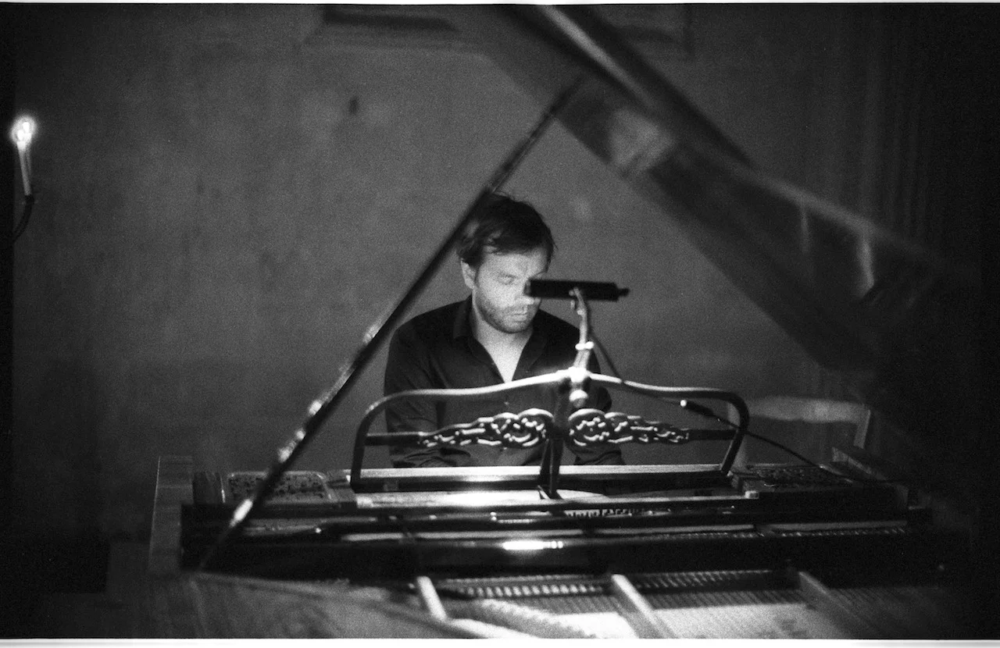

De l’interprétation sur instruments anciens aujourd’hui.
Le monde de la musique actuel n’aime pas les clivages. Aujourd’hui il est de bon ton pour un musicien de tout jouer, de tout interpréter, sur n’importe quel type d’instrument, ancien ou moderne. Comme le raconte la fable, la musique n’a pas de frontière, elle est partout chez elle, elle est universelle. Donc quoi de plus naturel que ses interprètes se transforment en de véritables caméléons.
Certes les instruments anciens occupent une place non négligeable dans nos salles de concerts mais faut-il voir cela comme une victoire ou une récupération ? La résilience dont a fait preuve le marché de la musique est assez extraordinaire quand on veut bien se souvenir des débuts sulfureux du mouvement baroque. Mais le spectaculaire retournement de situation qu’ont connu « les musiciens baroques » passant successivement du statut d’opportunistes n’ayant que le choix de la musique ancienne pour exister au statut de stars, laisse aussi entrevoir une certaine adaptation aux canons de la médiatisation. Cette critique systémique peut-elle nous amener à réfléchir à la question de l’interprétation sur des instruments anciens ?
Pour illustrer notre « parti pris » nous prendrons comme exemple le piano mais tout ce qui suivra sera facilement transposable aux autres instruments.
Nos pianos modernes ont l’extraordinaire avantage de pouvoir tout jouer, de Bach à nos jours, mais malheureusement d’une façon stéréotypée, gommant de fait certaines particularités spécifiques des compositeurs, lissant les périodes artistiques en les enfermant dans une vision tronquée de la musique. Nous jouons et écoutons la musique par conséquent sur des instruments inadéquats, à l’image d’une paire de lunettes inadaptée opérant une distorsion sonore que nous ne sommes plus capables d’entendre.
Aborder l’interprétation sur instruments historiques ou anciens, nécessite donc une décolonisation complète de nos imaginaires tant pour l’auditeur que pour l’interprète. A vrai dire pour l’interprète cette décolonisation devrait être son b.a.-ba. Elle ne peut se réaliser qu’en écoutant ce qui sort vraiment d’un pianoforte, d’un instrument à cordes en boyaux, ou d’instruments à vent de factures anciennes… et en acceptant ces sonorités comme le résultat d’une esthétique ancrée dans son époque et non pas comme des sons qui n’attendraient que le progrès technique de la facture instrumentale pour s’améliorer.
Une telle écoute nous protègerait de travers trop souvent entendus qui amènent certains d’entre nous à plaquer une interprétation inappropriée sur des instruments anciens, nous donnant ainsi l’impression qu’un instrument moderne « serait tout de même mieux ».
Mais comment appréhender les instruments anciens aujourd’hui ?
La principale difficulté pour répondre à cette question vient de notre incapacité à imaginer une époque sans après, sans tout ce qui est arrivé par la suite. Nous regardons ou plutôt écoutons du présent vers le passé et cela altère forcément notre aptitude à imaginer la modernité des temps anciens. Une interprétation contemporaine de la musique ancienne, peut-elle s’exonérer de cet effort de penser ? Pouvons-nous imaginer le Walter de Beethoven sans le Streicher de Brahms, le Graf de Schubert sans le Erard de Fauré, le Pleyel de Chopin sans le Steinway de Rachmaninov ?
Ces interrogations laissent déjà entrevoir l’éventail des possibles en terme d’interprétation, et remettent en cause la continuité linéaire de la transmission. Avouons-le, nous écoutons et jouons tous nos grands compositeurs sous le filtre du temps et de l’histoire. Il n’est nullement question ici d’en faire le procès, ni de s’y opposer par principe en enfilant le costume d’idéologues puristes, mais au contraire d’en prendre conscience afin de se libérer des chaînes de la tradition et de retrouver des choix d’interprétations inexplorées que l’on s’interdit aujourd’hui d’une manière plus ou moins consciente.
Il est souvent question de témoignage quand il s’agit d’instruments anciens. Nombres de concerts plus ou moins éducatifs que nous avons très souvent entendus, nous vantent les mérites des ces instruments aux sonorités si particulières plaçant l’auditeur dans un état totalement nostalgique. Il n’est jamais question d’art vivant mais plutôt d’un art du souvenir nous enfermant dans un folklore ne laissant aucune place à la modernité. De plus ce témoignage s’appuie sur une réelle imposture factuelle. En effet comment pouvons-nous imaginer faire du témoignage avec des instruments historiques ayant entre 100 ou 200 ans ? Le temps a forcément altéré le son original : la structure et les fibres du bois se déforment, les garnitures des marteaux s’usent… Les instruments à cordes du XVIIème siècle ont subi tant de ravalements à la fin du XVIIIème siècle qu’il devient difficile d’imaginer leur état d’origine. Bref l’ensemble de ces changements nous fait entendre un son bien différent. Essayer de retrouver les sonorités d’antan est vain et sans grand intérêt pour l’art d’autant plus que notre goût a changé et que nous attendons autre chose de la musique. Il faut plutôt chercher du coté des proportions, des caractéristiques sonores, des contours rythmiques qui font de ces instruments des outils parfaitement adaptés aux œuvres anciennes. Appréhender sous cet angle les instruments anciens - qui ont été à leur époque aimés ou détestés pour leur modernité - devient alors un des leviers les plus intéressants pour faire du concert sur instruments anciens un art vivant.
Venons-en maintenant à ce que nous fait entendre « un » instrument ancien. Insistons sur ce « un » qui souligne ici l’originalité des facteurs de piano, des luthiers donc les singularités de leurs instruments : des instruments de toutes formes, de toutes tailles, allant jusqu’à 7 jeux de pédales pour certains pianoforte, d’une à quatre cordes par note… de véritables œuvres d’art au service des interprètes, pensées et fabriquées par des artisans avec un haut niveau de raffinement, défendant leur travail, leur modèle d’instrument tout en ayant une haute idée de ce que leur facture pouvait avoir d’importance dans l’esthétique musicale. Souvenons-nous qu’à la fin du XIXème siècle et afin de défendre le son français, la maison Erard refusa pendant des décennies de se soumettre à la mode des cordes croisées pour ses pianos à queue. Mode imposée par la maison Steinway dont l’hégémonie commençait tout juste à s’étendre. Plus actuel encore, le combat malheureusement perdu par le basson français au sein même de nos orchestres face au fagott allemand…
La multitude de modèles de pianos tout au long de son histoire donne une idée de la diversité des écoles de factures en Europe. Les différences sonores à la fin du XVIIIème siècle entre le piano de Vienne, de Paris ou de Londres témoignent de cultures bien spécifiques. Les sonorités de l’école viennoise se caractérisent par la définition, la clarté, la précision, soulignant le coté parlando de la musique, alors que l’instrument londonien par exemple cherchera plutôt la rondeur, les résonnances, la puissance, une certaine longueur de son favorisant le cantabile… Ces différences stylistiques et esthétiques perdureront dans l’ensemble un peu au-delà du XXème siècle avec beaucoup de changements et de renversements : les sonorités claires de la fin du XIXème siècle étant l’apanage de la facture française, la chaleur ou la rondeur seront du coté allemand.
Ce que nous fait aussi entendre le piano ancien est son rapport de proportion sonore. En effet les tensions expressives entre les notes basses, médiums et aiguës fonctionnent à la perfection. Pour bien comprendre, prenons l’exemple d’une pièce pour piano de Mozart jouée sur un Steinway moderne de 7 octaves et demi. Nous constatons rapidement que le pianiste n’occupe que le centre du clavier et pour cause, le pianoforte de Mozart ne possède encore que 5 octaves. Il est donc facile à comprendre que le rapport de tension entre les graves et les aigus est totalement faussé, même avec toute la bonne volonté de notre interprète. Quand il joue les notes extrêmes de la sonate ses doigts se trouvent situés sur le haut ou bas médium de notre Steinway, une partie du clavier encore bien chantante mais bien moins tendue que sur le pianoforte de Mozart. Il en résulte donc une interprétation bien différente.
Reparlons à présent d’un grand changement évoqué ci-dessus pour les pianos de la fin du XIXème siècle : l’arrivée des cordes croisées. Avant cette époque, tous les pianofortes de toutes les régions du monde avaient des cordes positionnées de façon parallèle. Ce procédé a l’immense avantage de garantir une clarté harmonique parfaite. C’est à dire que les basses, les médiums et les aigus ne se mélangent aucunement, car le chevalet par lequel sont transmises les vibrations des cordes, occupe une place bien précise sur la table d’harmonie (fine partie de bois placée sous les cordes transformant les vibrations reçues par le chevalet posé dessus, en son). Le résultat perçu est une distinction très claire des plans sonores : l’écriture polyphonique est bien plus nette, les voix moins confuses. Le confort pianistique s’en ressent grandement. De plus, ces cordes parallèles nous protègent contre des basses trop envahissantes grâce à leur positionnement sur une partie moins vibrante de la table d’harmonie.
Alors pourquoi un tel engouement pour les cordes croisées qui sont l’exact contraire de tout ce précédemment décrit ? Et bien pour des raisons extra-musicales. Aussi étonnant que cela puisse paraître, c’est sous l’impulsion de la maison Steinway que se pérennisa cette facture grâce à des arguments commerciaux comme la nouveauté, le progrès technique, la profondeur des basses… Malheureusement ce nouveau marketing de la fin du XIXème siècle a eu raison des critères esthétiques vaillamment défendus jusqu’au début des années 1930, dates des derniers pianos construits avec des cordes parallèles par la maison française Erard.
Nous pourrions continuer les exemples comme l’apparition du cadre métallique au dépend du cadre serrurier, la préférence des cordes métalliques sur les cordes en boyaux pour les instruments à cordes ou la multiplications des clés sur les instruments à vent… mais la chose fondamentale à nos yeux est que nous avons totalement intégré ces « évolutions » que nous appelons « progrès ».
Nous pensons qu’il est grand temps de continuer l’offensive que les pionniers du mouvement baroque ont portée. Croire que les Harnoncourt, Leonhardt et autres frères Kuijken nous auraient seulement enrichis d’un savoir supplémentaire sur l’interprétation de la musique du XVIIème et XVIIIème siècle serait une lecture bien étroite de leur travail. Afin que cela ne soit pas lu comme une affaire de spécialistes il faut y voir tout l’aspect novateur que cela implique. En effet ils nous ont proposé bien plus : une autre façon de faire de la musique.
Si nous comptons continuer ce mouvement dans ce sens pour la musique du XIXème siècle il nous faut aussi être conscients que l’esprit révolutionnaire de nos précurseurs a tendance à s’affaiblir fortement et que le monde du spectacle actuel récupère le tout en pervertissant la chose. La spécialisation optionnelle qui consiste à jouer sur instruments historiques ressemble aujourd’hui à un gadget servant à se démarquer dans la jungle du marché de la musique.
Le travail de laboratoire que nous avons entrepris dans cette courageuse armée, la réflexion sur le sens de notre métier, le questionnement sur des sujets aussi passionnants que la transformation à la fin du XVIIIème siècle du musicien exécutant en musicien interprète, la naissance du mot « romantique », son aspect subversif et sa méfiance auprès des acteurs de l’époque, la nécessité absolue de réinterpréter les grands chefs d’œuvres sur des instruments anciens, l’interrogation sur un certain héritage culturel… sont pour nous les véritables sujets de recherche.
R.C.